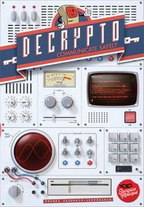

Decrypto
Catégories

Description rapide
Déchiffrer le code de l'équipe adverse avant qu'ils ne découvrent le votre.
Description
Les joueurs s'affrontent en deux équipes dans Decrypto, chacune essayant d'interpréter correctement les messages codés qui leur sont présentés par leurs coéquipiers tout en déchiffrant les codes qu'ils interceptent de l'équipe adverse.
Plus en détail, chaque équipe a son propre écran, et dans cet écran, elle range quatre cartes dans des poches numérotées de 1 à 4, permettant à tous les membres de la même équipe de voir les mots sur ces cartes tout en cachant les mots de l'équipe adverse. Au premier tour, chaque équipe fait ce qui suit : Un membre de l'équipe prend une carte de code qui montre trois des chiffres 1-4 dans un certain ordre, par exemple, 4-2-1. Ils donnent ensuite un message codé que leurs coéquipiers doivent utiliser pour deviner ce code. Par exemple, si les quatre mots de l'équipe sont « cochon », « bonbon », « tente » et « fils », alors je pourrais dire « Sam-rayé-rose » et espérer que mes coéquipiers peuvent correctement mapper ces mots à 4- 2-1. S'ils devinent correctement, tant mieux ; sinon, nous recevons une marque noire d'échec.
À partir du deuxième tour, un membre de chaque équipe doit à nouveau donner un indice sur ses mots pour faire correspondre un code numéroté. Si j'obtiens 2-4-3, je pourrais dire maintenant, "sucker-prince-stake". L'autre équipe essaie alors de deviner notre code numéroté. S'ils ont raison, ils reçoivent une marque blanche de réussite ; sinon, mon équipe doit deviner le nombre correctement ou prendre une marque noire d'échec. (Deviner correctement ne fait rien sauf éviter l'échec et donner à l'équipe adverse des informations sur ce que pourraient être nos mots cachés.)
Les tours continuent jusqu'à ce qu'une équipe récupère soit sa deuxième marque blanche (gagner la partie) soit sa deuxième marque noire (perdre la partie). Les parties durent généralement entre 4 et 7 tours. Si aucune équipe n'a gagné après huit tours, alors chaque équipe doit essayer de deviner les mots de l'autre équipe ; l'équipe qui devine le plus de mots correctement gagne.